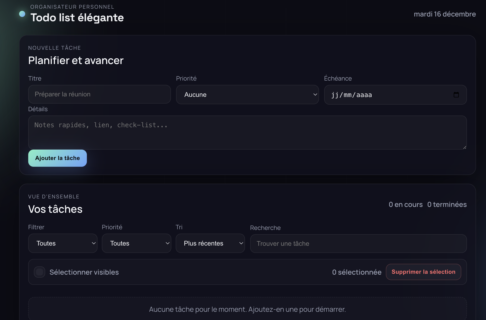

Un site web moderne qui transforme la gestion quotidienne des tâches en une expérience fluide et intuitive. Conçu pour fonctionner entièrement offline avec persistance locale des données.

Ce projet est né d'un constat simple : les gestionnaires de tâches existants sont souvent surchargés de fonctionnalités inutiles ou nécessitent une connexion permanente. L'objectif était de créer un site minimaliste, rapide, et accessible sans dépendance serveur.
En exploitant l'API LocalStorage du navigateur, le site garantit une disponibilité 100% offline tout en offrant une interface moderne avec système de priorités, dates d'échéance et recherche en temps réel.
Ajout de tâches avec titre, détails, priorité et date limite en un clic.
Vue par statut, priorité ou date. Recherche dynamique multi‑critères.
Modification directe sans popup, validation automatique.
Interface optimisée mobile/desktop avec thème sombre élégant.
Suppression unique ou en masse avec confirmation visuelle.
Aucune connexion requise, données stockées localement.
Front‑end
HTML5 sémantique, CSS3 Grid/Flexbox
Logique
JavaScript ES6+ (classes, modules)
Stockage
LocalStorage avec sérialisation JSON
UX
Transitions CSS, états hover/focus
Système de priorités
Trois niveaux (Aucune, Moyenne, Haute) avec indicateurs visuels et tri automatique.
Dates d'échéance
Sélecteur natif HTML5, format localisé, et alertes visuelles pour les deadlines.
Recherche intelligente
Filtrage temps réel sur titre et détails, insensible à la casse.
Compteurs dynamiques
Statistiques en temps réel : tâches en cours vs terminées.
Debounce sur sauvegardes + fallback gracieux
Validation stricte et sanitization des entrées
Virtual scrolling et lazy rendering
State machine pour les modes d'interaction
Ce projet a été une opportunité d'approfondir la manipulation du DOM sans framework, de maîtriser les API natives du navigateur, et de concevoir une architecture maintenable pour du JavaScript vanilla. Il a également permis de développer une sensibilité UX forte, notamment sur la gestion des états de chargement et les feedbacks visuels.
Les évolutions futures envisagées incluent : synchronisation cloud optionnelle, PWA avec service worker, tags/catégories pour tâches, et export/import au format JSON.